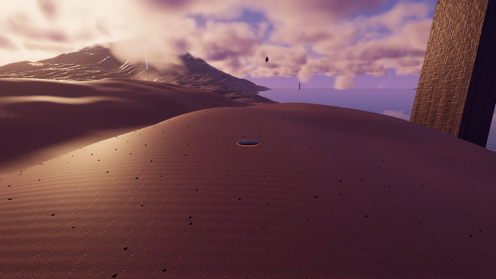

EXOWEB / NÁCARUn horizonte estable.
Corrección del parpadeo de nubes, bandas lejanas y brillos sobre montañas. La reconstrucción temporal ahora compensa el desplazamiento del antialiasing; las nubes usan su propia rejilla estable y respetan la profundidad antes de mezclar muestras.
Informe técnico y reproducción · Renovación gráfica original · Abrir el juego
Comparación con cámara y tiempo iguales

ANTES · 0012df1DESPUÉS · CORREGIDO1920 × 1080, medio, escala 100%, costa, tiempo 30 s. Una imagen fija sirve para comprobar composición y materiales; el parpadeo se evalúa entre fotogramas.
Medición temporal
| Región y medida | Antes | Después |
|---|
| Nubes del cielo · variación media | 0,755 | <0,001 |
| Nubes del horizonte · variación media | 1,086 | <0,001 |
| Montaña, imagen final · p99 de variación | 28,33 | 6,33 |
Diferencias RGB entre 16 capturas con cámara y tiempo inmóviles, en niveles de 0 a 255. Dos pruebas automatizadas fallan sobre la versión anterior y pasan en la corregida. Datos y coordenadas de las regiones.
Movimiento después de la corrección
65 s: rodadura, planeo y giros, agua, cruce de nubes y cambio de origen. El tramo costero aparece al final. Grabación anterior; los tiempos de carga y las trayectorias no son idénticos.
Rendimiento local
RTX 5070 Ti, WebGPU, 1080p nativo, medio. Recorrido de control de 64,97 s: 108,24 FPS medios, p95 ≤14 ms en los seis tramos, máximo 21,0 ms, memoria administrada estimada ≤403,6 MiB. Sin errores WebGPU. El vídeo se grabó por separado. Medición completa.